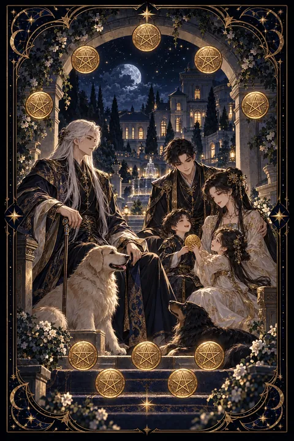

이 게시물은 쿠팡 파트너스 활동의 일환으로, 이에 따른 일정액의 수수료를 제공받습니다.


펜타클 10 카드 — 대를 이어 가는 풍요
펜타클 10 카드 한눈에 보기
펜타클 10 카드 상징 읽기

동네보살의 카드 그림은 전통 라이더–웨이트 덱의 뜻을 새 그림으로 옮긴 것입니다. 아래 상징 설명은 전통 덱의 그림을 기준으로 합니다.
펜타클 10에는 커다란 아치 아래 흰머리 노인이 두 마리 개와 함께 앉아 있고 그 너머로 젊은 부부와 어린아이가 서 있습니다. 세 세대가 한 화면에 모인 구성은 대를 이어 전해지는 풍요와 가족의 연속성을 보여 줍니다.
열 개의 동전은 카발라의 생명의 나무 모양으로 배열되어 있습니다. 물질적인 풍요가 우연히 흩어진 것이 아니라 질서 있게 쌓인 결과라는 의미입니다.
노인이 입은 문장 무늬 옷과 아치에 새겨진 문장은 집안의 이름과 전통을 상징합니다. 충직한 두 마리 개는 오래 이어진 신뢰와 보호를 나타냅니다.
뒤편에 보이는 저택과 성곽은 한 사람이 아닌 여러 사람이 기대어 살 수 있는 튼튼한 터전을 뜻합니다. 아이가 노인의 옷자락 곁에 있는 모습은 쌓은 것이 다음 세대로 건너가는 장면을 그려 냅니다.
펜타클 10 카드 정방향 뜻
정방향 펜타클 10은 오랫동안 이어질 안정과 풍요를 뜻합니다. 개인의 성공을 넘어 가족과 공동체가 함께 누리는 넉넉함을 그린 카드로 삶의 기반이 단단히 뿌리내리는 시기입니다.
집을 마련하거나 가정을 꾸리는 일, 집안의 전통을 이어받는 일처럼 긴 호흡이 필요한 계획에 좋은 흐름입니다. 가족 모임이나 경사가 생기기 쉽고 어른들의 지원이나 조언이 큰 힘이 되어 줍니다.
이 카드는 당장의 이익보다 십 년, 이십 년 뒤를 내다보는 선택을 권합니다. 살림의 규칙을 정하고 저축 계획을 식구들과 함께 세워 보세요. 지금 다져 둔 기반이 다음 세대까지 이어지는 든든한 울타리가 됩니다. 물려받은 가치를 소중히 여기면서도 자신만의 방식으로 한 뼘 더 넓혀 가는 것이 이 카드의 가르침입니다.
펜타클 10 카드 역방향 뜻
역방향 펜타클 10은 가족이나 집안의 기반에 균열이 생긴 모습을 보여 줍니다. 재산이나 부양 문제를 두고 식구 사이에 서운함이 쌓이거나 서로의 기대가 엇갈릴 수 있습니다.
오래 지켜 온 전통이나 집안의 방식이 부담으로 느껴져 벗어나고 싶다는 생각이 자주 드는 시기이기도 합니다. 눈앞의 이익에 끌려 오랫동안 쌓아 온 안정을 흔드는 결정을 내리기 쉬우니 신중함이 필요합니다.
그렇다고 집안의 기반이 송두리째 흔들린다는 의미는 아닙니다. 돈과 책임에 관한 이야기는 감정이 격해지기 전에 차분한 자리에서 나누는 것이 좋습니다. 합의한 내용은 기록으로 남겨 두면 오해를 줄일 수 있습니다. 물려받은 틀이 맞지 않는다면 무작정 버리기보다 지킬 것과 바꿀 것을 나누어 새로운 기반을 설계해 보세요.
연애에서 펜타클 10 카드
솔로라면 가벼운 만남보다 앞날을 함께 그릴 수 있는 진지한 사람이 곁에 나타날 수 있는 때입니다. 가족이나 오랜 지인의 소개로 만나는 인연이 특히 잘 맞을 수 있습니다. 결혼이나 오래가는 관계를 원한다면 그 마음을 숨기지 말고 솔직하게 드러내 보세요.
이미 만나는 사람이 있다면 두 사람의 관계가 가족의 울타리 안으로 한 걸음 들어서는 흐름입니다. 서로의 부모님을 뵙는 자리를 만들거나 앞으로 꾸릴 살림을 구체적으로 이야기하는 일이 자연스럽게 이어집니다. 다만 두 사람의 마음보다 집안의 조건이나 경제적인 문제를 앞세우면 갈등이 생길 수 있습니다. 둘이 먼저 같은 방향을 보고 그다음에 주변을 설득하는 순서가 중요합니다. 함께 모으는 저축 목표를 세워 보는 것도 관계를 단단하게 묶어 줍니다.
재회·속마음 질문에서 펜타클 10 카드
재회 질문에서 펜타클 10이 나오면 두 사람 사이에 오래 쌓아 온 추억과 인연의 뿌리가 아직 남아 있다는 뜻입니다. 함께 알던 사람들이나 가족을 통해 다시 연결될 가능성도 있습니다. 다만 헤어진 이유가 집안 문제나 경제적인 부담이었다면 그 부분이 해결되지 않고서는 같은 자리로 돌아가기 쉽습니다. 감정에 기대어 서두르기보다 현실적인 조건을 차분히 살피고 앞으로의 계획을 함께 이야기할 준비가 되었을 때 다가가 보세요. 오래 함께할 수 있다는 믿음을 행동으로 보여 주는 것이 가장 큰 설득이 됩니다. 공통의 지인이나 가족 행사처럼 자연스러운 자리에서 다시 마주치는 것도 좋은 계기가 됩니다.
일·금전에서 펜타클 10 카드
일과 직장에서는 오래 머물 수 있는 안정된 자리를 얻거나 기반을 탄탄히 다지는 시기입니다. 규모 있는 조직이나 전통 있는 회사, 가족이 함께 꾸리는 일과 인연이 깊습니다. 선배나 윗세대의 노하우를 배워 두면 큰 밑거름이 됩니다. 당장 눈에 띄는 변화가 적더라도 오래 머물수록 신뢰와 대우가 함께 쌓이는 자리입니다.
금전 면에서는 살림이 뿌리를 내리는 때입니다. 당장의 수익보다 오래 유지할 수 있는 수입 구조를 만드는 데 힘을 쏟아 보세요. 식구들과 함께 가계의 큰 그림을 그리고 비상금과 저축을 차근차근 늘려 가면 넉넉함이 다음 세대까지 이어집니다. 가족 행사나 경조사 비용은 미리 따로 떼어 두면 살림이 흔들리지 않습니다.
펜타클 10 카드는 예일까 아니오일까
오래 이어질 안정과 가족의 풍요를 그린 카드라서 대답은 예입니다. 가족이나 장기적인 계획과 관련된 질문이라면 더욱 힘이 실립니다. 역방향일 때는 식구 간 의견부터 맞춰야 하니 조건부로 봅니다.
자주 묻는 질문
펜타클 10 카드 역방향은 나쁜 뜻인가요?
역방향 펜타클 10은 가족이나 집안의 기반에 균열이 생긴 모습을 보여 줍니다. 재산이나 부양 문제를 두고 식구 사이에 서운함이 쌓이거나 서로의 기대가 엇갈릴 수 있습니다.
펜타클 10 카드가 연애 질문에 나오면요?
솔로라면 가벼운 만남보다 앞날을 함께 그릴 수 있는 진지한 사람이 곁에 나타날 수 있는 때입니다. 가족이나 오랜 지인의 소개로 만나는 인연이 특히 잘 맞을 수 있습니다. 결혼이나 오래가는 관계를 원한다면 그 마음을 숨기지 말고 솔직하게 드러내 보세요.
타로 카드는 어떻게 뽑나요?
타로 카드 페이지에서 78장을 섞으면 그중 22장이 펼쳐집니다. 마음이 가는 세 장을 고르면 과거·현재·미래 자리에 놓이고, 한 장씩 뒤집어 자리와 방향에 맞는 풀이를 읽습니다. 정방향과 역방향은 섞는 순간 정해집니다.